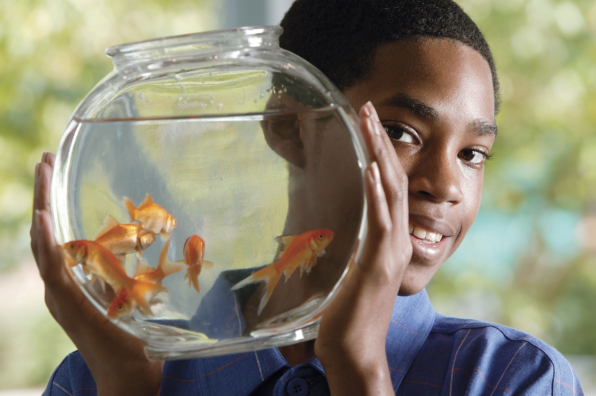

Pete, owner of McAllister
"Wisdom Pet Medicine is the only clinic around that will even book pet fish for appointments."


Our Mission
Wisdom Pet Medicine strives to blend the best in traditional and alternative medicine in the diagnosis and treatment of companion animals including dogs, cats, birds, reptiles, rodents, and fish. We apply the wisdom garnered in the centuries old tradition of veterinary medicine, to find the safest treatments and cures.
We strive to be your pet's medical experts from youth through the senior years. We build preventative health care plans for each and every one of our patients, based on breed, age, and sex, so that your pet receives the most appropriate care at crucial milestones. We want to give your pet a long and healthy life.